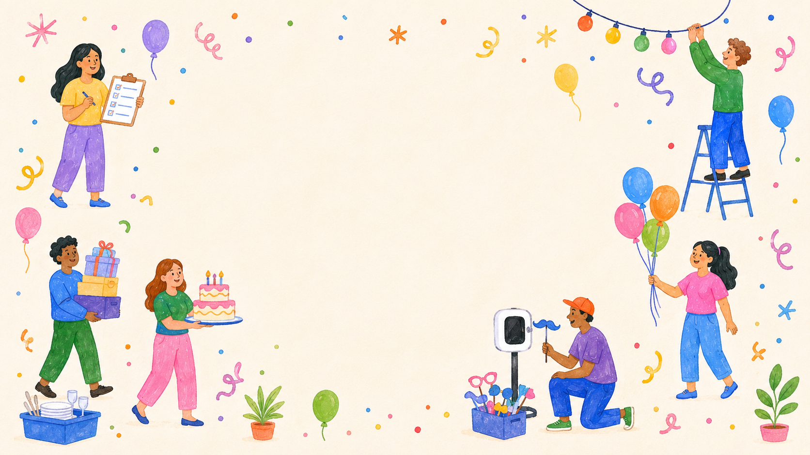
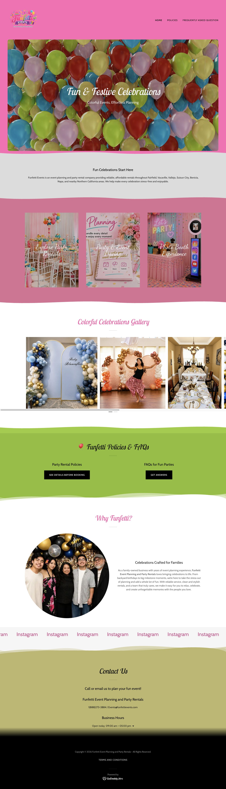
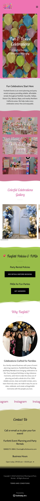
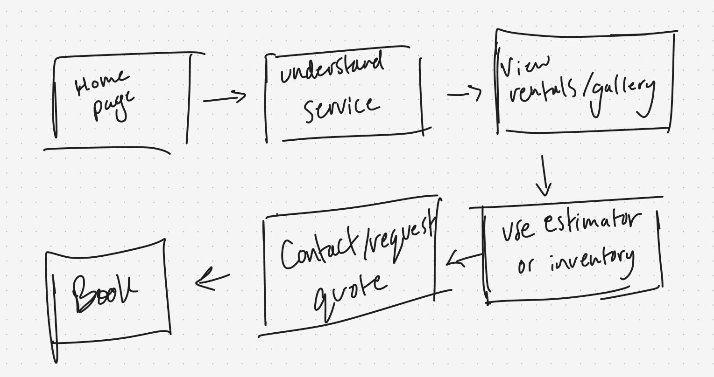
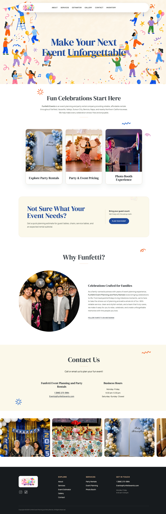
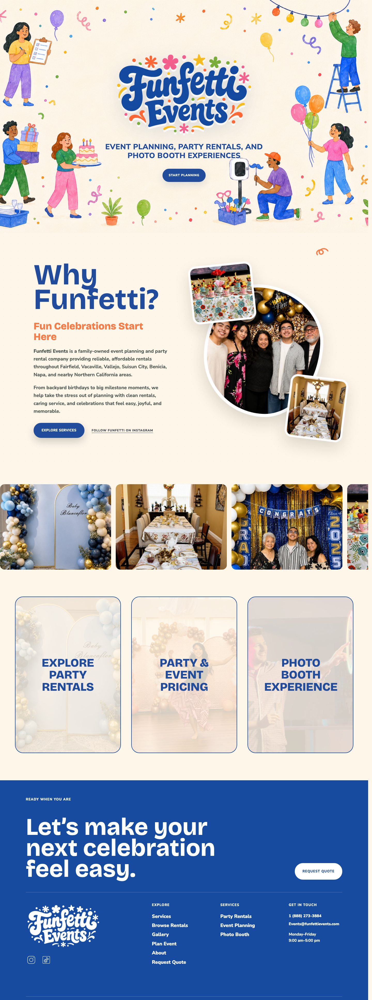
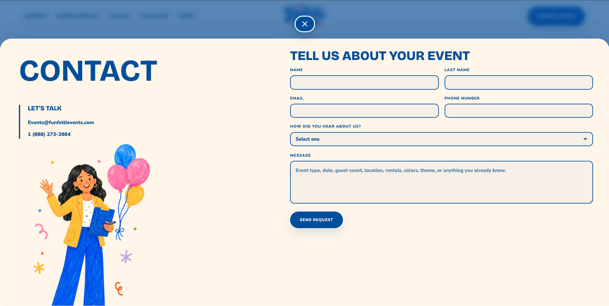
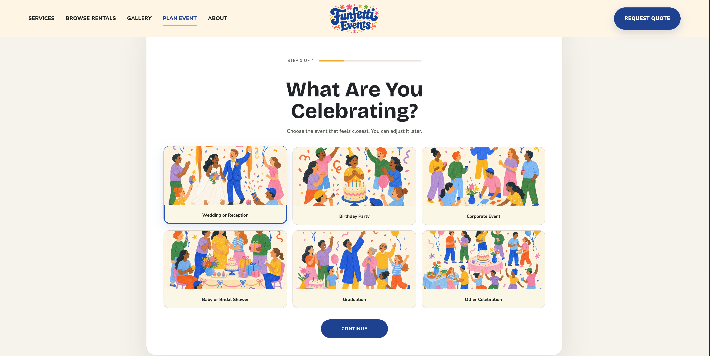

The first impression did not feel intentional enough.
The original visual direction used colors, imagery, and layout choices that made the site feel less cohesive than the kind of celebration-focused service Funfetti provides.


Context
Funfetti Events is a new event-planning and party-rental business serving celebrations like birthdays, family parties, and local events. I offered to redesign their website as a portfolio project and as a practical way to help the business look more polished online.
Because the business is still early, there was not a large library of past events to build the design around. That made the visual system especially important: the site needed to communicate fun, trust, and what Funfetti offers without leaning on generic-looking filler imagery.
Problem
The original visual direction used colors, imagery, and layout choices that made the site feel less cohesive than the kind of celebration-focused service Funfetti provides.
The logo and some text moments competed with their backgrounds, which made the header feel less polished and harder to scan quickly.
The header links were present, but they did not clearly prioritize the actions a visitor would need: understand services, view examples, and contact the business.
Visitors could find contact information, but the page did not immediately explain what Funfetti does or make the next step feel obvious.


Challenge
The main goal was visual: make the site feel more colorful, more fun, and more professional. But the redesign also needed a better user flow, because a prettier site still fails if people cannot quickly understand the services or find the booking path.
I treated the homepage as the main decision-making path: first explain the business, then show the service categories, then build trust through event imagery, then make contact/requesting a quote easy to find.
Design priorities
Use brighter color, friendlier illustrations, and a clearer logo moment so the site feels like an event business, not a generic template.
Make event planning, party rentals, and photo booth services visible early so visitors do not have to decode what the business does.
Use the header, hero CTA, service cards, and quote entry points to make booking feel like the natural path through the page.
Preserve important pieces like the Why Funfetti story and service information, but reorganize them into a clearer visual hierarchy.
User flow

Make the offer clear quickly: event planning, rentals, photo booth, and local celebration support.
Separate the main service categories so visitors can decide which path matches their event.
Use real event examples and rental/inventory links to build trust before asking for contact.
Give visitors a clearer way to understand what can be rented before they reach out.
Make the contact step easy to find once a visitor understands the service categories.
The site should reduce uncertainty before the business finalizes details directly with the customer.
First iteration

The first pass gave the homepage a stronger structure: hero, business story, services, gallery, and contact. It was cleaner than the original site and easier to scan.
After seeing the direction, the owner said they wanted the site to “pop” more and have more color. That feedback helped me push the second version further visually instead of stopping at a clean but quieter layout.
The main trade-off was balancing energy with clarity. The final pass needed to feel more fun without making the booking path harder to follow.
Insight
Because Funfetti is still early, the site could not rely only on a long gallery of past events. The design had to do more of the trust-building work through layout, readability, tone, and service clarity.
That shifted the project away from decoration alone. The visual system needed to feel warm and playful, but each section still had to answer a practical question: what is this business, what do they offer, and how do I start planning with them?
Final direction
I simplified the logo presentation and gave the hero a stronger visual identity so Funfetti feels more memorable from the first screen.
The service section separates rentals, event pricing, and photo booth experiences so visitors can understand the offer quickly.
The header and hero actions point visitors toward services, rentals, gallery proof, and requesting a quote instead of leaving the next step vague.
Responsive nav, visible focus states, native dialog lightbox, keyboard controls, aria-live results, and reduced motion.
Screens


Build
Because I was redesigning an existing website instead of starting from a blank product brief, I moved quickly into coded prototypes. Figma was used lightly for user-flow sketches, while most of the visual exploration happened directly in Codex, HTML, CSS, and JavaScript.
The final front end includes responsive navigation, a session-based intro animation, a moving gallery, a keyboard-friendly lightbox, reduced-motion support, and a quote-request modal.
Outcome
Looking ahead
